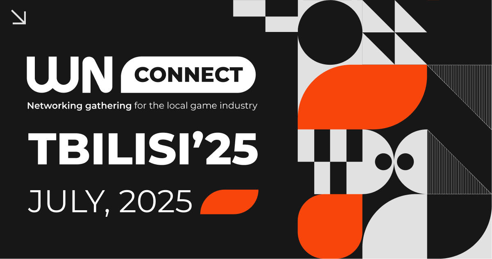
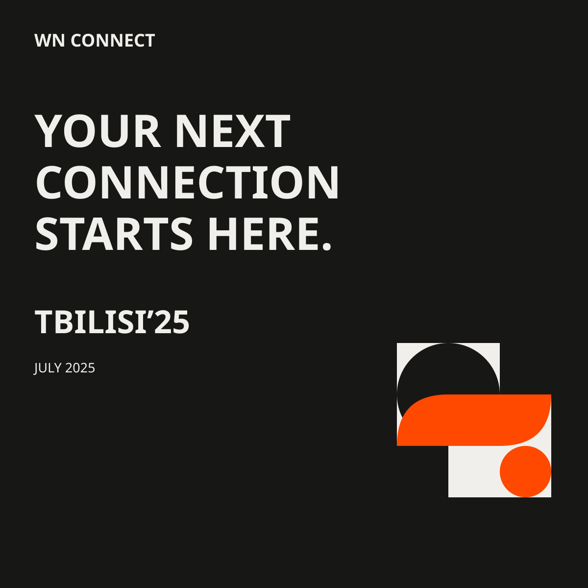
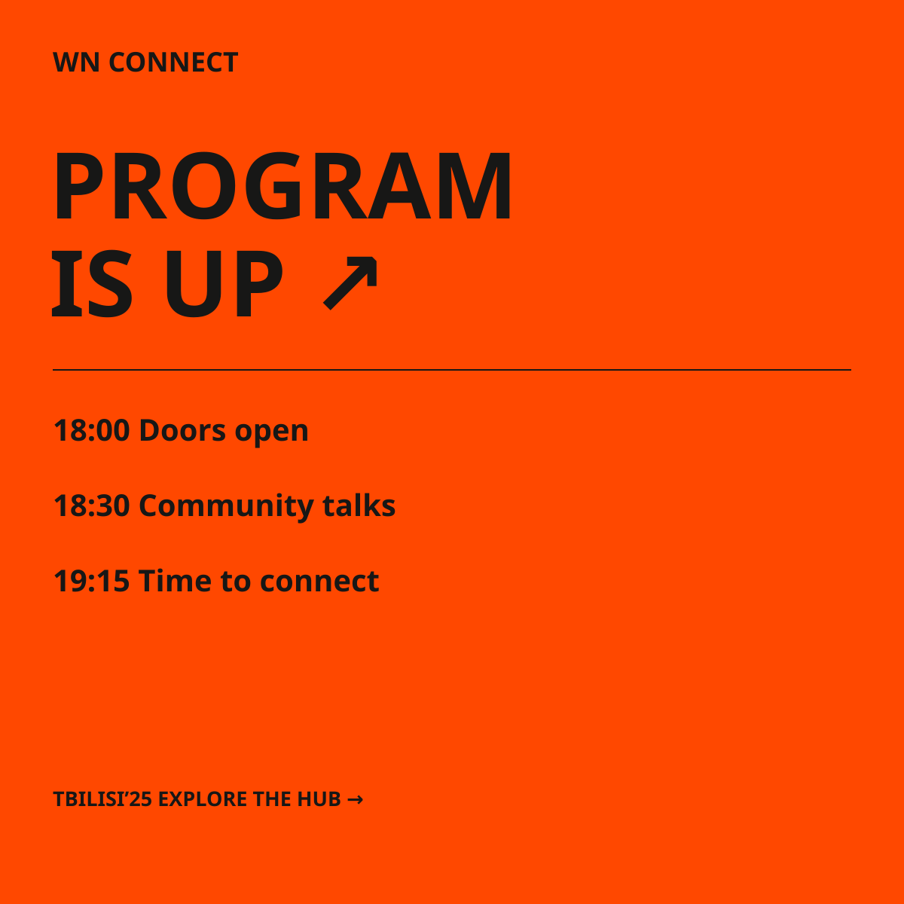
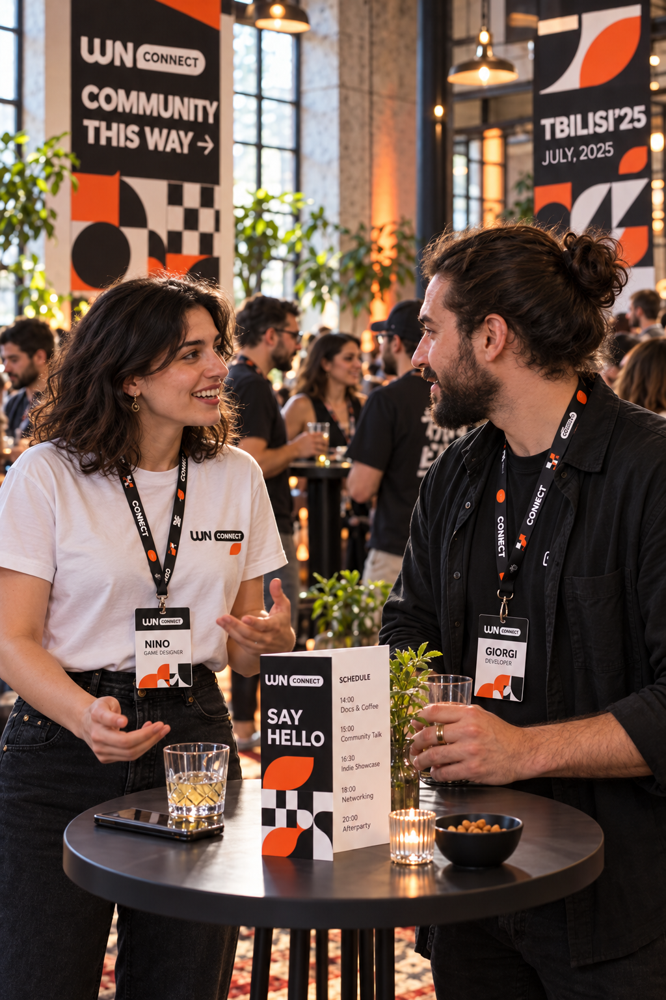
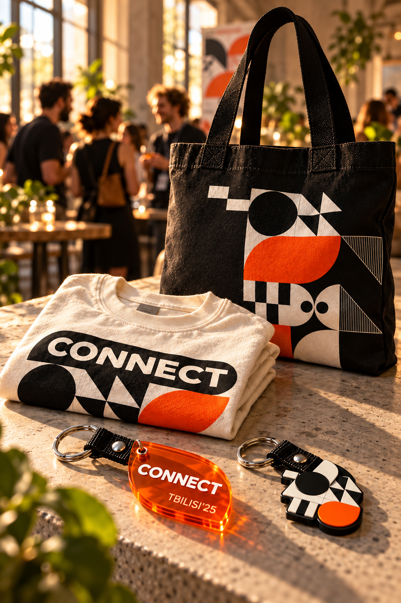
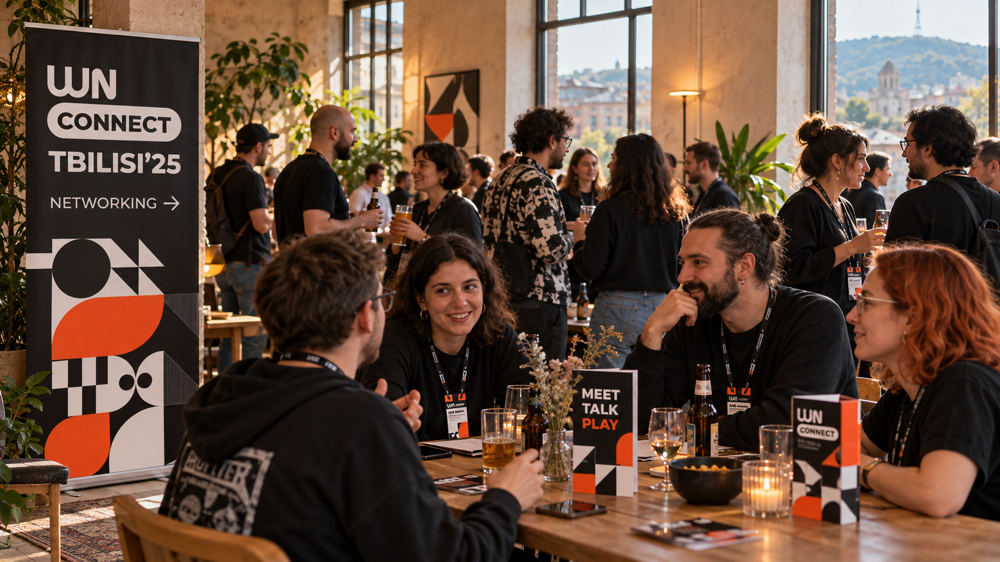
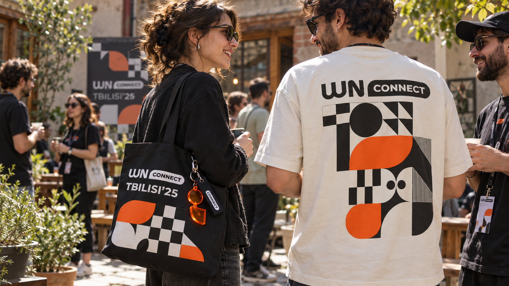
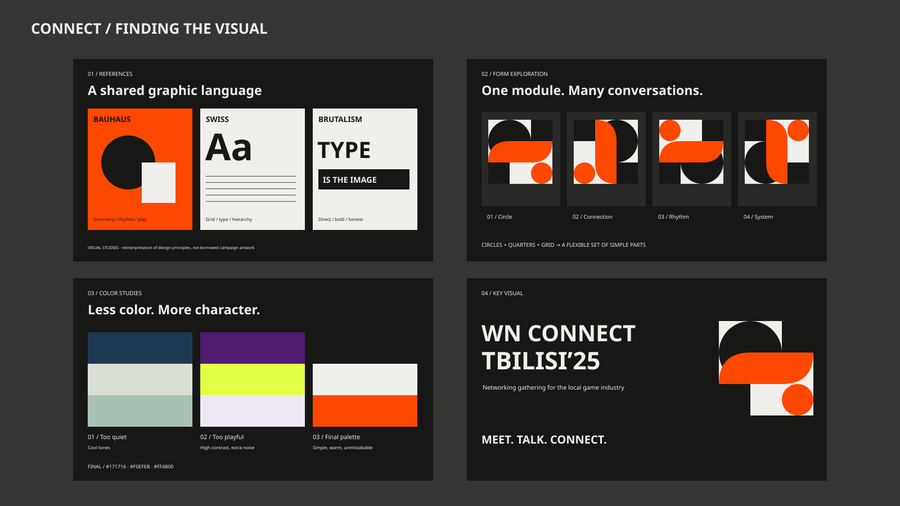

Задача
Разработать общий визуальный язык и оформление события: публикации в соцсетях, мерч и полиграфию на площадке. Соблюсти простоту решения для адаптации на большое количество форматов, не потеряв в выразительности.
Визуальный стиль камерного нетворкинг-ивента для локального геймдев-сообщества: соцсети, мерч и оформление площадки.
Единая визуальная система: анонсы, программа, мерч и полиграфия в пространстве камерного события.

Основной визуал Connect Tbilisi’25: типографика и модульная геометрия.

Анонс встречи локального геймдев-сообщества.

Program is up: информационный пост о программе вечера.

Бейджи и вертикальный тейблтент среди гостей.

Составные акриловые брелоки, футболка и шопер.

Навигационные баннеры в наполненном гостями пространстве.

Футболка, шопер и брелок в использовании.

Поиск визуала: референсы, формы, цветовая схема и финальный key visual.
Авторская концепция. Фотографии площадки и мерча — AI-визуализации применения дизайна. Поисковые слайды реконструируют возможный процесс.
WN Connect Tbilisi’25 — камерный нетворкинг-ивент для местного профессионального сообщества игровой индустрии. Встреча в Тбилиси, где можно познакомиться с коллегами, обсудить проекты и продолжить общение в неформальной обстановке.
Разработать общий визуальный язык и оформление события: публикации в соцсетях, мерч и полиграфию на площадке. Соблюсти простоту решения для адаптации на большое количество форматов, не потеряв в выразительности.
В основе — крупная типографика, модульная геометрия и чёрно-белая палитра с оранжевым акцентом. Баухаус, швейцарский дизайн и брутализм определили работу с формой, сеткой и контрастом. Простые элементы объединяют соцсети с акриловыми брелоками, футболками, шоперами, навигационными баннерами, вертикальными тейблтентами и бейджами.